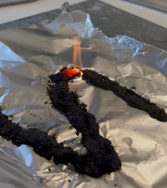

- feuerfeste Unterlage
- Aluminiumfolie
- Abzug
- Feuerzeug
- Wunderkerze
- Becherglas
- Waage
- Spatel
- (Magnet)
Experiment: Schwefel-Eisen Verbrennung
Materialien
Chemikalien

Schwefel ist reizend

Eisenpulver ist leicht entflammbar
Schutzbrille und Schutzkleidung tragen. Experiment im Abzug durchführen. Entsorgung im organischen Feststoffkanister.
Durchführung
- feuerfeste Unterlage in den Abzug legen und etwas Alufolie darauflegen
- Eisen (7g) und Schwefel (4g) abwiegen (Becherglas auf der Waage) (Verhältnis 7:4)
- Eisen und Schwefel mit Spatel vermischen und auf die Alufolie geben (in beliebige Form geben)
- Wunderkerze entzünden und dann damit die Eisen-Schwefel Mischung entzünden.
- Um die magnetische Wirkung zu überprüfen, kann das elementare Eisen mit einem Magneten im Gefäß an der Außenwand bewegt werden. Das entstandene Eisensulfid kann ebenfalls auf seine magnetische Wirkung untersucht werden.
Beobachtung
Die Schwefel-Eisen Mischung glüht durch die Wunderkerze und entzündet sich. Entlang der gelegten Form verbrennt die Mischung langsam. Die Glut breitet sich ohne weitere Wärmezufuhr durch das gesamte Material aus. Es entsteht ein beißender Geruch. Die Mischung liegt danach in einem dunkelgrauen, porösen Feststoff da, die leicht zerbröselt. Das entstandene Eisensulfid ist im Gegensatz zum Ausgangsstoff Eisen nicht mehr magnetisch.

CC BY-SA 4.0" data-source="Eigenes Bild" data-author="Mila B., Weronika J." data-title="Verbrennung Beobachtung">Erklärung
Die beiden Stoffe reagieren miteinander und setzen Energie frei:
\( \ce{Fe + S -> FeS} \)